/math-74b8eddf4b37de80c7c8eed1b64e46fc.png "\mu \,\!") は全応答データの平均、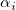 は因子Aのレベルi での偏差、
は全応答データの平均、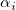 は因子Aのレベルi での偏差、/math-193f021d9028eb9706698a6f5c0f1e0a.png "\beta _j\,\!") は因子Bのレベルj での偏差、 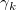 は因子Cのレベルk での偏差、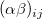 は因子AとB間の相互作用項、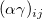 は因子AとC間の相互作用項、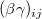 は因子BとC間の相互作用項、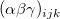 は因子A、B、C間の相互作用項、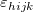 は誤差項です。
は因子Bのレベルj での偏差、 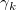 は因子Cのレベルk での偏差、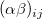 は因子AとB間の相互作用項、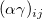 は因子AとC間の相互作用項、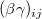 は因子BとC間の相互作用項、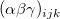 は因子A、B、C間の相互作用項、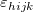 は誤差項です。
目次 |
N 個の観測値が3つの因子、Iレベルの因子A、Jレベルの因子B、Kレベルの因子Cと関連しているものとします。
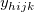を因子Aのレベルi 、因子Bのレベル j 、因子Cのレベル k でのh 番目の観測値を表すものとすると、三元配置分散分析モデルは下記のようになります。
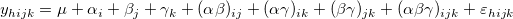
ここで は全応答データの平均、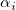 は因子Aのレベルi での偏差、 は因子Bのレベルj での偏差、 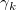 は因子Cのレベルk での偏差、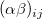 は因子AとB間の相互作用項、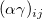 は因子AとC間の相互作用項、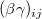 は因子BとC間の相互作用項、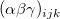 は因子A、B、C間の相互作用項、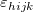 は誤差項です。
三元配置の分散分析では、モデルを指定できます。例えば、項 を除外でき(その場合、項は自律的に除外されます)、モデルは以下のようになります。
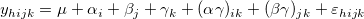
指定されたモデルのサンプル偏差は、いわゆる計画行列の手法で生成されます。サンプルとして全てのモデルについて述べると、この手法の処理の要約は、以下の通りです。
全モデルの自由度は 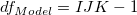 です。全計画行列は 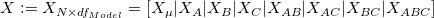、ここで、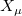 は /math-c9faf6ead2cd2c2187bd943488de1d0a.png "\mu") の副計画行列で、これは通常全て "1" で構成され、他の副計画行列はそれぞれの添え字が意味するものです。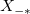 が関連する0の副計画行列の置換によって表現されるとします。例えば、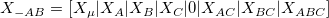
の副計画行列で、これは通常全て "1" で構成され、他の副計画行列はそれぞれの添え字が意味するものです。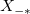 が関連する0の副計画行列の置換によって表現されるとします。例えば、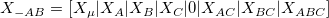
定義
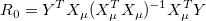
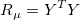
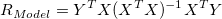
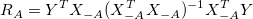
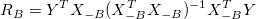
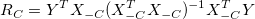
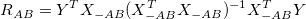
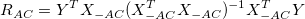
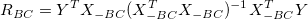
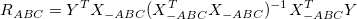
二乗誤差の合計は、
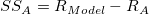
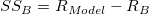
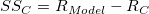
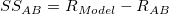
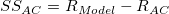
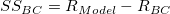
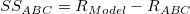
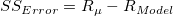
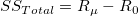
全モデルでは、ANOVA表は以下のようにまとめることができます。
| 分散の入力 | 自由度 (DF) | 平方和 (SS) | 平均平方 (MS) | F 値 | Prob > F |
|---|---|---|---|---|---|
| 因子A | I - 1 | 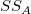 | 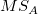 | / 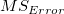 | 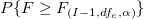 |
| 因子B | J - 1 | 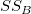 | 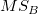 | / | 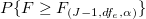 |
| 因子C | K - 1 | 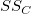 | 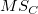 | / | 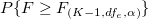 |
| A*B | (I- 1) (J - 1) | 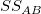 | 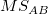 | / | 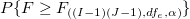 |
| A*C | (I- 1) (K - 1) | 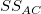 | 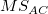 | / | 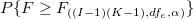 |
| B*C | (J- 1) (K - 1) | / | |||
| A*B*C | (I- 1) (J - 1)(K - 1) | / | |||
| 誤差 | =N-IJK | /math-349fb0475e9b16a6353bbc1aae235e6a.png "SS_{Error}")
|
|||
| 合計 | N - 1 | /math-100f5db42fc55631c7b4e798218f6a8f.png "SS_{Total}")
|
Originでは、平均比較にさまざまな方法があり、これはocstat_dlsm_mean_comparison() 関数を使って行っています。
複数の平均の比較法の2種類がOriginに含まれています。
シングルステップ法これは、Tukey-Kramer, Bonferroni, Dunn-Sidak, Fisher’s LSD, Schefféを含む、平均がどの程度違うのかを示すために信頼区間を作成します。
ステップワイズ法Holm-Bonferroni 、Holm-Sidak 検定を含む仮説検定を実行します。
検出力分析は、サンプルデータに対する仮説の検出力だけでなく、実際の検出力を計算します。
三元配置ANOVAの検出力は、その敏感度の計測です。検出力は、ANOVAが実際の差があるときの標本の平均の差を検出するものです。帰無仮説および対立仮説に関して、検出力は検定する統計量 F が、実際に帰無仮説を棄却すべき(例：与えられた帰無仮説が真でない)ときに、帰無仮説を棄却するのに十分であるという確率です。
Originの三元配置ANOVAダイアログは、因子A、因子Bおよび因子C に対する検出力を計算します。特定の交差項が選択された場合もOriginは検出力を計算します。
検出力は次式で定義されます。
/math-e3a9b7f790e5b9b01d2fe974337ea4cf.png "power=1-probf(f,df,dfe,nc)\,\!")
ここで f は、非中心の F-分布の偏りで、このF分布は自由度df および dfe と nc = SS/MSEを持ちます。SS はA, B, C, A*B, A*C, B*C, A*B*Cの二乗和で、MSEは誤差の平均平方、 df は分子の自由度、dfe は誤差の自由度です。全ての値(SS, MSE, df, dfe) は、ANOVA表で取得できます。probf( ) の値が、NAG関数nag_prob_non_central_f_dist (g01gdc)で取得されます。詳細はNAG文書をご覧ください。
上記は、簡単な三元配置ANOVAのアルゴリズムの概要であり、詳細な数学的な演算については、このマニュアルの対応する部分やNAG文書を参照してください。
Leveneの検定を行うために以下の統計を使用します。
ここで
N は観測値の数、 は観測値 のサブグループの数です。
そして、p値 が得られます。